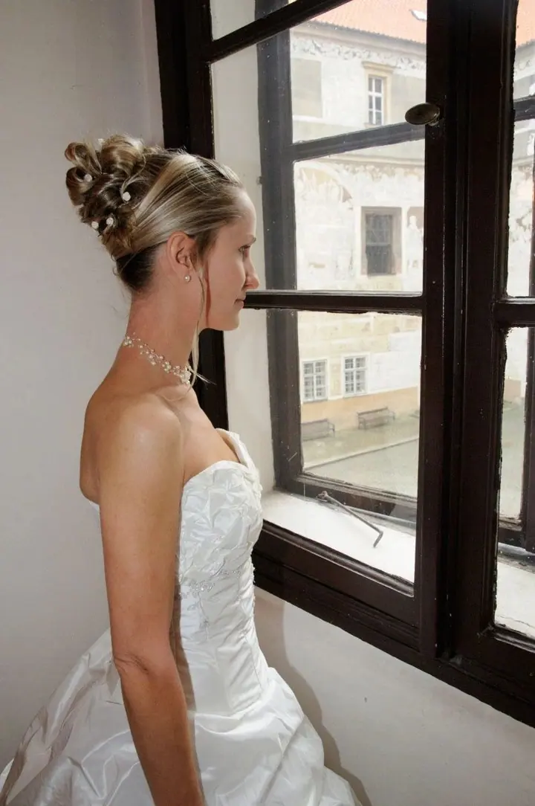
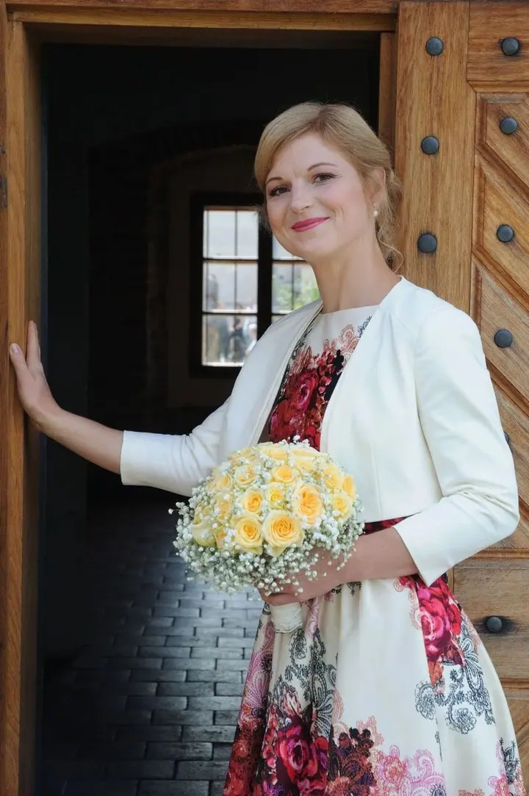
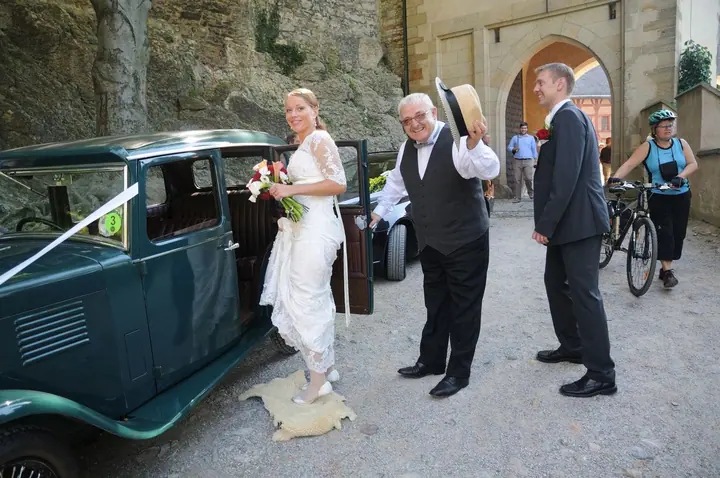

Svatební fotografie
Fotím svatby v Praze a okolí, na hradech, zámcích, v zámeckých zahradách i v uličkách historických měst. Ke každému páru přistupuji osobně a spolu vybereme nejvhodnější místa pro focení.





Jmenuji se Petr Holeček a jsem svatební fotograf z Prahy. Fotím svatby na hradech, zámcích i v malebných uličkách středních Čech a nejvíc mě těší, když se před objektivem cítíte přirozeně a uvolněně.
Více o mně
„Mou snahou je, abyste se při fotografování cítili přirozeně a uvolněně a stejně tak potom působily i vaše svatební fotografie.“
— Petr Holeček
Fotím svatby v Praze a okolí, na hradech, zámcích, v zámeckých zahradách i v uličkách historických měst. Ke každému páru přistupuji osobně a spolu vybereme nejvhodnější místa pro focení.
Přivítání vašeho děťátka zdokumentuji na fotografiích v jedinečném prostředí kostela.
Přirozené a uvolněné emoce dětí v přírodě a v lifestylovém prostředí. Rád vyrážím na rodinné procházky třeba na vrch Klepec u Jevan.
Jmenuji se Petr Holeček a jsem profesionální svatební fotograf z Prahy. Většinu svateb fotím v Praze a jejím okolí, často v Kostelci nad Černými lesy, Kouřimi, Brandýse nad Labem, na Křivoklátě nebo na Karlštejně. Rád ale přijedu kamkoliv v České republice.
Baví mě dělat krásné a originální fotky a mám radost, když jimi mohu potěšit i vás. Do svatebních fotografií se snažím promítnout charakter lidí, které fotím, a chci, aby z nich byla cítit neopakovatelná atmosféra vašeho dne. Dělám vše pro to, aby vás focení bavilo tak jako mě.
Při focení svateb objevuji různá svatební místa a rád se o zkušenosti podělím. Ať už lákají hrady Karlštejn a Kokořín, zámek v Dobříši, nebo spíš nekomerční místa s vlastním geniem loci, jako je Viniční domek v Modřanech či Panský dvůr v Dolních Počernicích, rád vám s výběrem poradím.
Napište mi přes formulář datum obřadu a pár slov o vaší svatbě. Snažím se odpovídat obratem.
Sejdeme se osobně nebo přes videohovor, probereme detaily dne a vybereme nejvhodnější místa pro focení.
Podle zvoleného balíčku s vámi strávím hodinu, čtyři nebo osm hodin a budu se snažit, abyste se cítili přirozeně a uvolněně.
Dostanete 100 až 300 fotografií v elektronické podobě se základními úpravami. Fotky pro vás archivuji jeden rok.
Balíček MINI na 1 hodinu stojí 3 000 Kč, STANDARD na 4 hodiny 5 500 Kč a PREMIUM na 8 hodin 9 000 Kč. Žádné skryté poplatky.
Podle balíčku 100, 200 nebo 300 fotografií v elektronické podobě se základními úpravami. Archivuji je pro vás jeden rok.
Většinu svateb fotím v Praze a ve středních Čechách, ale rád přijedu kamkoliv v České republice.
Určitě. Znám řadu fotogenických míst, od hradů Karlštejn a Kokořín přes zámek v Brandýse nad Labem až po Viniční domek v Modřanech nebo Arboretum v Kostelci nad Černými lesy.